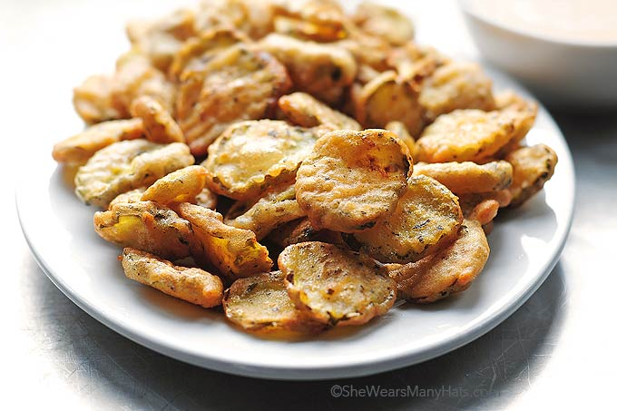

Fried Pickles

Description
Who would have thought that pickles could taste so good fried? Partner them with Cajun buttermilk ranch dressing for dipping. Yum!
Ingredients
- 1/2 cup buttermilk
- salt and black pepper to taste
- 1 (16 ounce) jar pickle slices
- 1/2 cup all-purpose flour
- 1 1/2 cups fine cornmeal
- 1 teaspoon seafood seasoning, such as Old Bay
- 1/4 teaspoon Cajun seasoning
- 1 quart oil for frying
- 1/2 teaspoon Cajun seasoning
- 1 (12 ounce) buttermilk ranch dressing
Steps
- Cover a plate with parchment paper or wax paper. In a shallow dish, combine buttermilk, salt, and pepper. Place pickles in mixture and set aside.
- Pour the flour, cornmeal, seafood seasoning, and 1/4 teaspoon Cajun seasoning into a large, resealable plastic bag; shake to mix well. Add pickles a few at a time and tumble gently to coat evenly with the flour mixture. Remove and place on prepared plate.
- Heat oil to 365 degrees F (180 degrees C) in deep-fryer or heavy deep skillet.
- Fry pickles in several batches until golden brown and slightly crisp on the outside with a moist interior, 1 to 2 minutes. Drain on paper towels.
- In a small bowl, combine buttermilk ranch dressing with 1/2 teaspoon Cajun seasoning; blend. Serve as a dipping sauce for warm pickles.